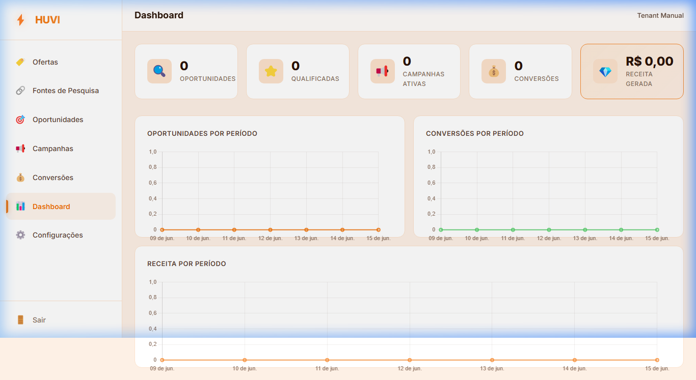
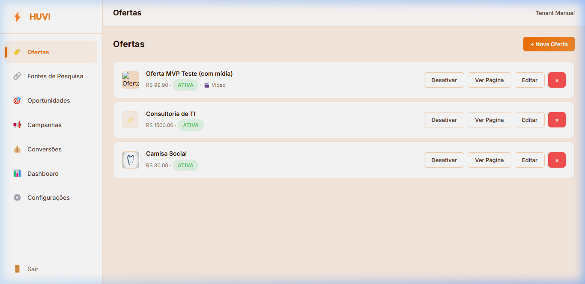
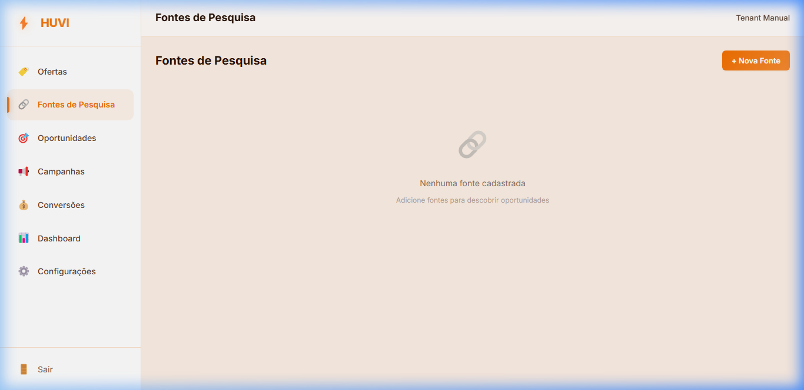
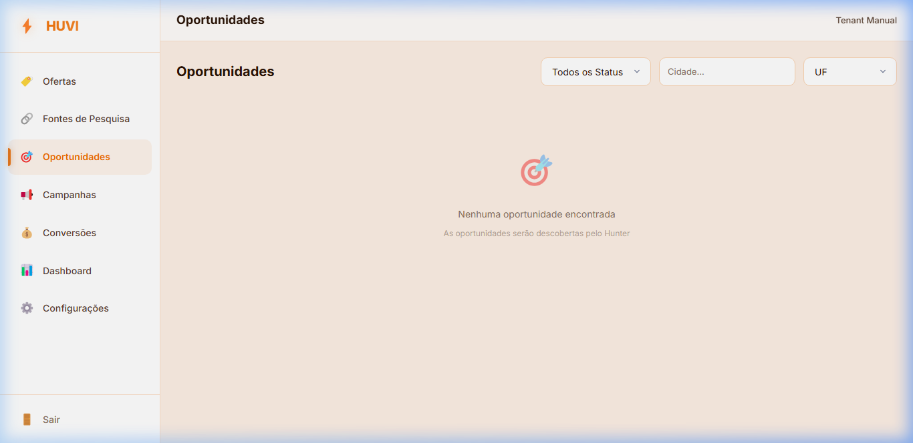
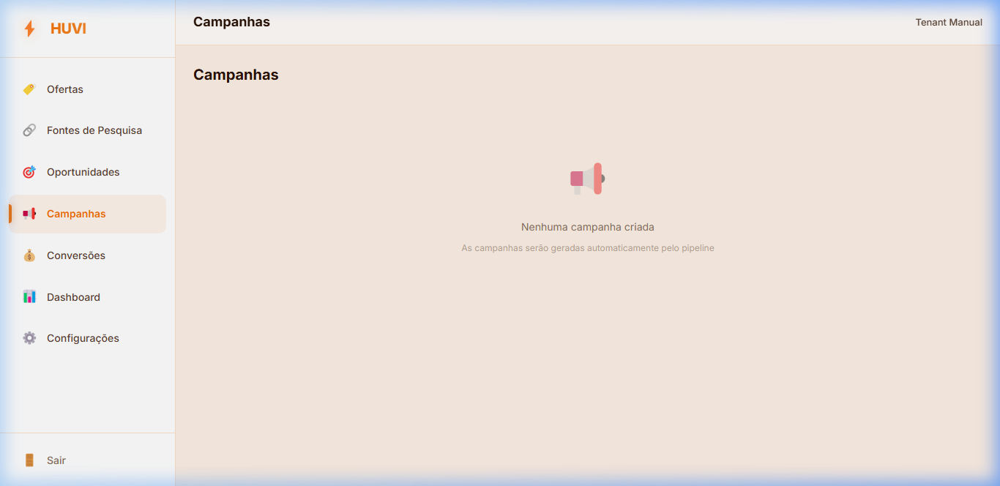
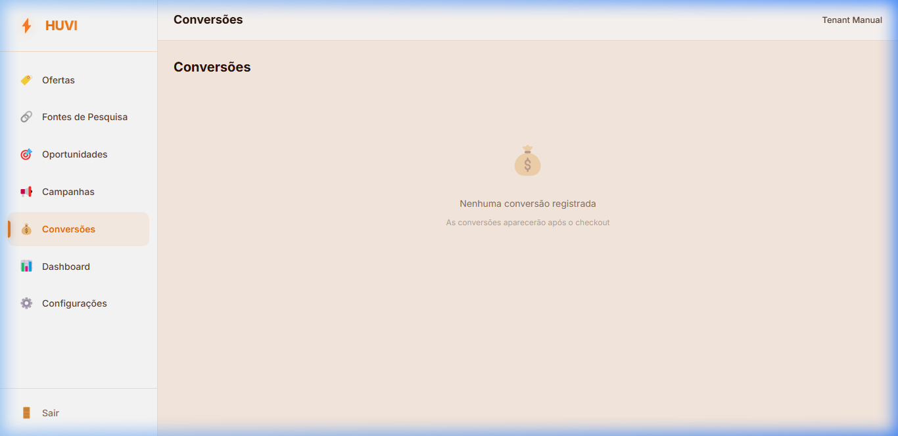
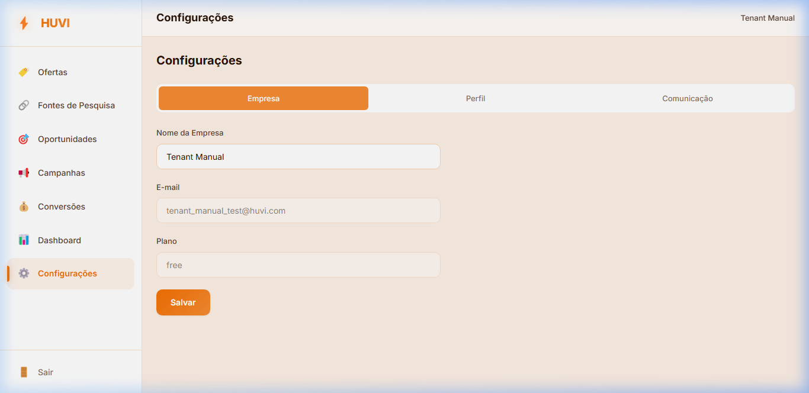

Manual do Usuário Tenant — HUVI
O Guia Definitivo para Escalar suas Vendas com Inteligência Artificial e Automação
📖 Introdução: O que é o HUVI?
O HUVI (Hub de Vendas Inteligente) é uma plataforma SaaS multi-tenant inovadora, projetada para transformar produtos, serviços e leads brutos em oportunidades reais de conversão e receita recorrente.
A filosofia central do HUVI é baseada no Princípio do ROI e da Geração de Receita: o sistema não é projetado com foco em métricas de vaidade, mas sim em métricas reais de negócios: oportunidades qualificadas, campanhas ativas, conversões concluídas e receita financeira gerada.
Para alcançar esse objetivo de forma comercialmente robusta, o HUVI utiliza uma arquitetura inteligente de agentes baseada no motor HUVI Brain integrada a pipelines no n8n e armazenamento seguro e isolado no Supabase.
Este manual guiará você, Tenant (Cliente do HUVI), por todas as abas e ferramentas da plataforma, fornecendo um passo a passo prático para configurar suas ofertas, capturar leads e convertê-los em clientes pagantes.
🔑 1. Primeiro Acesso e Cadastro
Para iniciar no HUVI, você deve acessar o endereço do aplicativo e criar sua conta comercial.
- Acesse a tela inicial do HUVI no navegador.
- No formulário de login, clique no link "Criar conta".
- Preencha seu Nome Completo, seu E-mail corporativo e defina uma Senha de acesso (mínimo de 8 caracteres).
- Clique em Criar conta.
📊 2. O Dashboard Principal
Ao fazer login na plataforma, você será direcionado para o painel de controle central. Esta tela é o seu painel de bordo executivo, fornecendo uma visão macro sobre a saúde do seu funil comercial.

KPIs de Performance:
- Oportunidades: Quantidade total de leads capturados em suas Fontes de Pesquisa que entraram no pipeline do HUVI.
- Qualificadas: Quantidade de oportunidades classificadas pelo agente de IA (Scorer) com alta viabilidade comercial e prontas para prospecção.
- Campanhas Ativas: Número de estratégias de engajamento ativo que estão rodando para atrair estes leads.
- Conversões: Número de vendas convertidas com sucesso.
- Receita Gerada: Total de receita financeira consolidada que entrou no caixa através dos checkouts concluídos.
🏷️ 3. Cadastrando e Gerenciando Ofertas
A Oferta é o coração da sua estratégia de vendas no HUVI. Ela descreve o que você vende, qual o valor e para onde os leads devem ser direcionados para fechar o negócio.

Como cadastrar uma nova oferta:
- Vá até o menu lateral esquerdo e clique em Ofertas.
- Clique no botão + Nova Oferta no canto superior direito.
- Preencha os campos:
- Nome da Oferta: Título comercial do seu produto ou serviço.
- Descrição: Texto detalhado sobre as dores que o produto resolve e diferenciais.
- Imagem da Oferta: Faça upload de uma imagem representativa de até 2MB.
- URL de Vídeo: Link do YouTube ou Instagram demonstrativo.
- Preço (R$): Valor cobrado pelo produto/serviço.
- URL Landing Page: Link externo do seu site comercial.
- URL Checkout (Asaas): Link de pagamento direto do Asaas onde a transação financeira ocorrerá.
- URL Calendário: Link do Nexus Agenda para agendamento automático de chamadas comerciais.
- Clique em Salvar.
🔗 4. Capturando Leads (Fontes de Pesquisa)
As Fontes de Pesquisa definem de onde virão os seus clientes em potencial. O HUVI é compatível com canais automáticos e manuais de captação.

Tipos de Fontes Suportadas:
- Google Maps: Prospecção de negócios locais por geolocalização e palavras-chave.
- Instagram: Prospecção baseada em perfis de concorrentes ou nichos.
- Website: Rastreamento de sites institucionais específicos.
- Manual: Cadastro individual de um lead específico.
- Diretório: Permite importar listas de leads em lotes a partir de arquivos CSV ou planilhas.
Upload de Arquivos e Mapeamento de Colunas
Caso você tenha uma lista de contatos em uma planilha, você pode usar a importação via diretório:
- Clique em + Nova Fonte na tela de Fontes de Pesquisa.
- Selecione a opção Diretório entre os tipos de fonte.
- Arraste ou selecione seu arquivo
CSVouXLSX(limite de 5MB). - O HUVI abrirá automaticamente o modal de Mapear Colunas com um preview dos seus dados.
- Associe as colunas da sua planilha com os campos oficiais do HUVI (Nome da Empresa, Contato, E-mail, Telefone, Cidade, UF).
- Clique em Importar.
🎯 5. O Pipeline de Vendas (Oportunidades)
Após a importação ou captação das fontes, seus leads aparecem no menu Oportunidades. É aqui que o motor de Inteligência Artificial do HUVI entra em ação.

Cada lead passa por um pipeline de enriquecimento e tomada de decisão automática pelos agentes do HUVI:
- Descoberta (discovered): Lead recém-capturado com dados brutos.
- Enriquecida (enriched): Informações adicionais buscadas automaticamente.
- Diagnosticada (audited): A IA do Auditor analisa as fraquezas e oportunidades comerciais do lead.
- Classificada (scored): O Scorer pontua o lead para priorizar os melhores negócios.
- Estratégia (strategy_defined): O Strategist desenha a melhor abordagem para abordar o cliente.
- Campanha (campaign_created): Copy de vendas personalizado gerado pelo Campaign.
- Contatada (contacted): O Dispatcher disparou a primeira mensagem (WhatsApp/E-mail).
- Em Conversa (in_conversation): O lead respondeu e o agente SDR assumiu o diálogo.
- Convertida (converted): O cliente efetuou o pagamento.
Abas do Modal de Detalhes da Oportunidade
Ao clicar em qualquer linha de oportunidade na tabela, você verá um modal robusto contendo o histórico e a análise profunda da IA para aquele lead:
- Informações: Dados básicos cadastrados do contato (Empresa, Contato, E-mail, Telefone, Website, Cidade, UF).
- Diagnóstico (Agente Auditor): Mostra uma análise aprofundada gerada pela IA sobre o posicionamento atual, Pontos Fortes (🎯), Pontos Fracos (⚠️) e as Recomendações Comerciais (💡) de melhoria.
- Classificação (Agente Scorer): Mostra o Score Comercial (0-100) e o Score de Viabilidade (0-100), além da justificativa.
- Estratégia (Agente Strategist): Mostra o plano de abordagem sugerido, o Tipo de Conversão recomendado (Direta, Agendamento ou Híbrida) e o link de destino.
📢 6. Engajamento Automático (Campanhas)
A aba Campanhas gerencia as prospecções ativas criadas de forma personalizada para cada um dos seus leads.

- O agente Campaign reúne o diagnóstico específico daquele lead e a sua oferta ativa para escrever uma mensagem de copy extremamente direcionada.
- O **Dispatcher** cuida do envio automático dessa copy pelo canal habilitado (WhatsApp ou E-mail), atualizando o status para **Enviada** ou **Falhou** no painel de acompanhamento.
💰 7. Acompanhamento de Conversões
Toda vez que um lead realiza um checkout bem-sucedido no Asaas ou conclui uma reunião de fechamento via Nexus, o HUVI registra o evento de conversão.

A tela de Conversões mantém o histórico detalhado contendo o nome da empresa convertida, o tipo de conversão realizada (Direta, Agendamento ou Híbrida), o valor previsto e o valor real consolidado da venda.
⚙️ 8. Configurações Gerais e Regras de Comunicação
No menu Configurações, você controla o comportamento da sua conta e da automação de mensagens, dividido em três abas principais:

- Empresa: Dados cadastrais da empresa e exibição do seu plano HUVI atual.
- Perfil: Seu nome, e-mail e senha de login na plataforma.
- Comunicação:
- Canais Habilitados: Chaves para ligar ou desligar os envios automáticos por WhatsApp e E-mail.
- Horário Silencioso (ex: 22:00 às 08:00): Faixa de horário em que o Dispatcher fica proibido de enviar qualquer mensagem comercial, garantindo profissionalismo e conformidade com o horário comercial do lead.
💡 9. Boas Práticas para Maximizar seus Resultados
Para obter o máximo desempenho comercial com o HUVI, siga estas diretrizes recomendadas:
- Mantenha uma única Oferta clara e concisa: Garanta que a descrição contenha informações específicas sobre as dores que você resolve e os links da Landing Page/Checkout estejam corretos. A IA utilizará estes dados para gerar as copys.
- Crie Fontes específicas: Ao nomear suas Fontes de Pesquisa, use títulos claros (ex: "Clínicas Zona Sul SP"). Isso ajuda a rastrear quais fontes e nichos trazem a maior taxa de conversão e receita.
- Respeite o Horário Silencioso: Configure o horário de silêncio de acordo com o fuso horário local dos seus leads para evitar abordagens inconvenientes durante a noite ou fins de semana.
- Analise os Diagnósticos da IA: Antes de entrar em reuniões agendadas ou interagir manualmente, leia a aba "Diagnóstico" e "Estratégia" na tela de Oportunidades. A IA fornece atalhos valiosos de argumentação comercial que aceleram o fechamento de vendas.